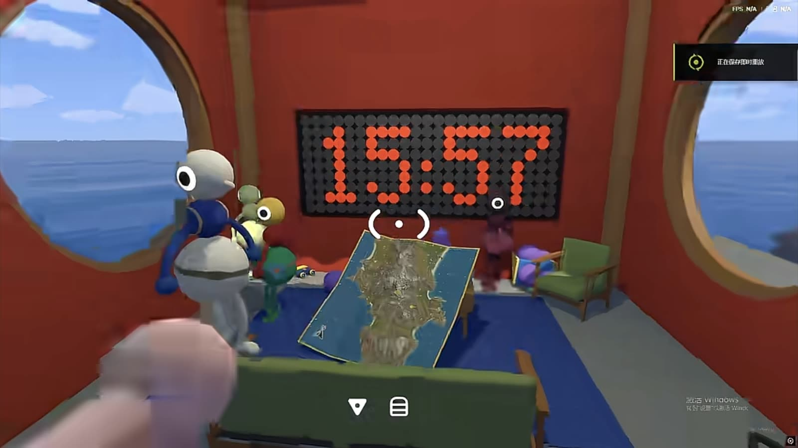
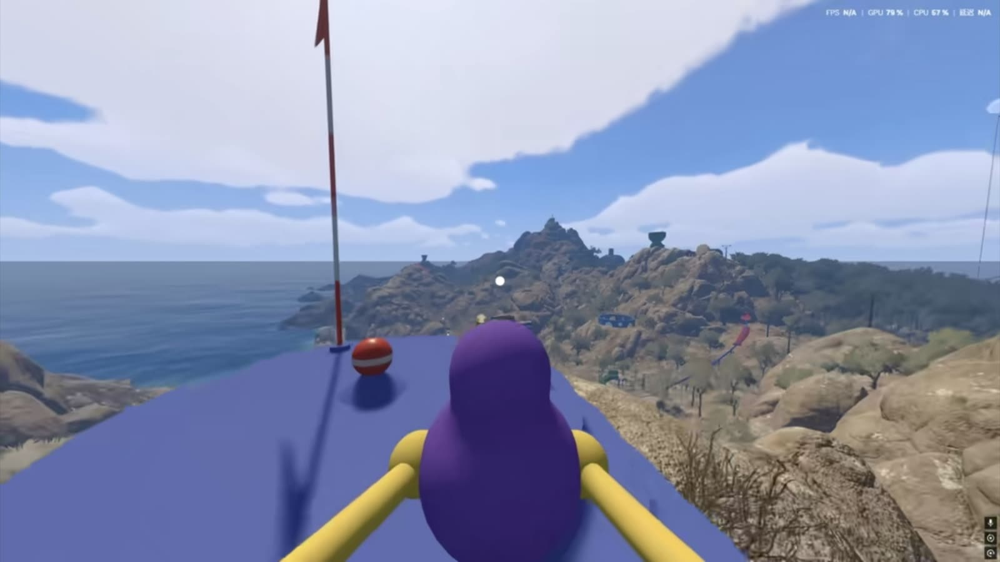
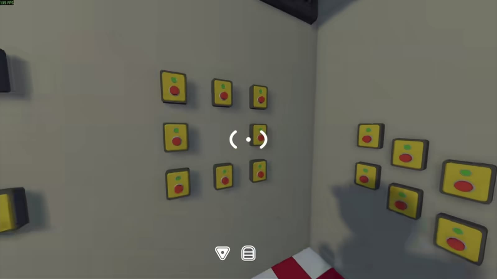
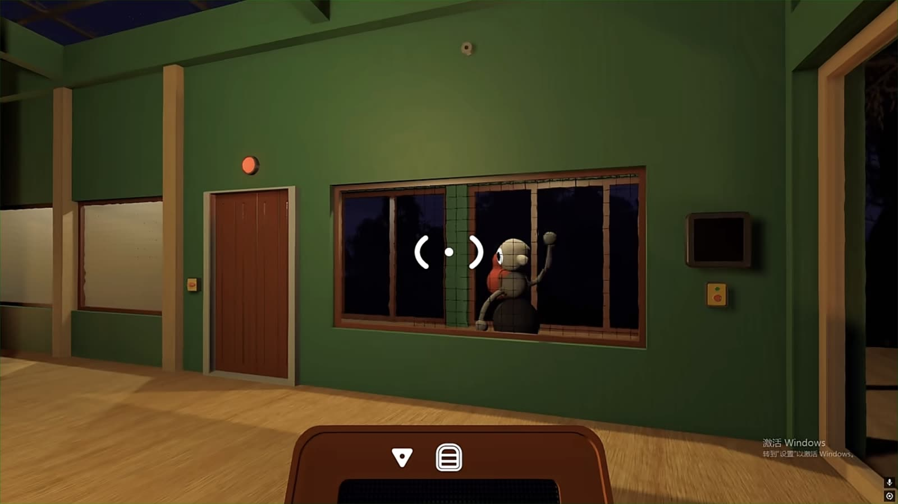
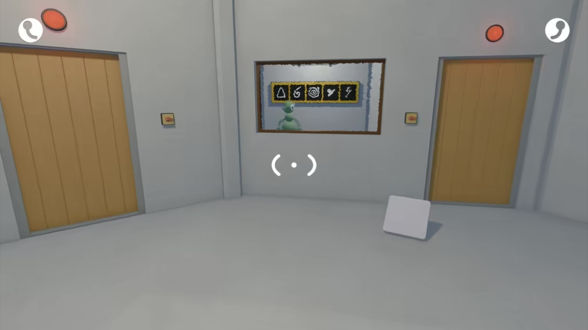
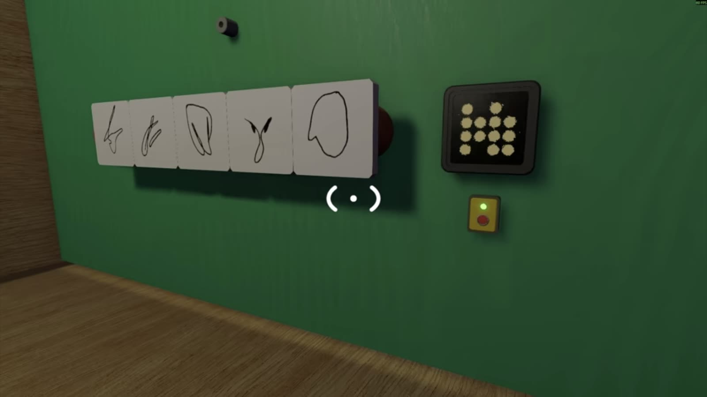
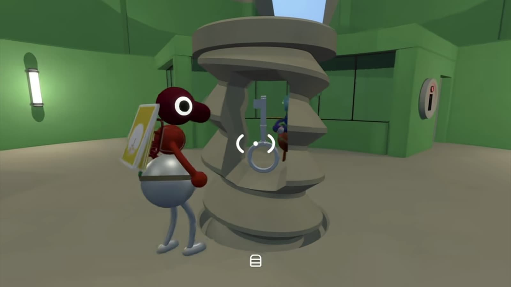

Illustrated guide
Big Walk True Ending — The Purple Gourds (Illustrated)
Finishing Big Walk's main quest can leave you feeling a little empty — I know the feeling. But the game hands you more once the credits roll. Head to Challenge Ridge and you'll find the seven purple gourds, each the reward for one two-player puzzle. Collect all seven, hunt down the eight red ones too, and the fifteen of them open the true ending. This guide marks where the purple gourds are and walks you through each one with a screenshot.
- 01
Where the purple gourds are

All seven purple gourds live in Challenge Ridge, the far east of the island. The seven purple gourds are post-game rewards, so finish the main quest and reach The Big Goodbye first — not one purple gourd shows up before that.
Re-enter the map after the credits and ride the chairlift up to the ridge station on the east side. The station unlocks once you collect five red gourds from the puzzles around it.
Inside, look to your right and follow the purple tunnel. Out the other side, all seven challenges are in that stretch, and the big map lights up with the seven purple markers shown here.
You can also reach the ridge puzzles by some less obvious routes, and puzzles you solved early still count after the ending — but finishing the story first and coming back the normal way is a lot easier.
- 02
The 30-minute waiting house

Press the button, get locked in, and let the clock do the work. Walk in and you are locked in. Press the button and the timer starts. There is no trick here — it is a patience test, exactly as the name says. Thirty minutes later it simply completes itself.
- 03
Golf: carry the ball across the mountain

Expect to spend a lot of time scouting the ridge and relaying the ball on this one. The hole is empty — not a single ball in it. Grab one from the red Blorb golf course in the red area and carry it through the mountain routes over to the green area. No throwing and no kicking: someone has to physically carry it the whole way, and a little relay helps on the long hauls.
- 04
Lights everywhere: press the buttons in order

One player reads the order the lights come on, the other presses the matching buttons. One player reads out the order the bulbs light up; the other presses the matching buttons on the wall in a different room. Easiest if you split the area into sections first and both of you work from the same picture.
- 05
Nine speakers, no talking

You can't talk — only knock and gesture through the window. This is the hardest of the seven. One player listens out for the nine sounds and has to tell the teammate placing the speakers where each one goes. No talking is allowed, so you are down to knocking and hand signals. Set your knock language in advance — a tap for 'this one', a double-tap for 'no, that one'.
- 06
Nine symbols, no talking

Same idea as the speakers, but the symbols are visible and easier to call out. Same idea as the speakers, but it is visible symbols instead of sounds. This one is easier: the symbols are easy to memorise and to describe. Read the panel, call it across, and press the matching controls.
- 07
Thirty-six picture pairs

A whole run of near-identical plates — the fine details are what matter. A matching puzzle, and a brutal one: a whole row of little plates that all look almost identical. Describe them in real detail — shape, outline, everything. Pin down the tiny differences and you will save the whole squad a lot of time.
- 08
Platforming, but fast

Drop the backpack before the run — it snags in the narrow gaps. It is the timed version of the running section you did early in the game. Drop the backpack you are carrying first — it snags in the narrow gaps and slows you down. Once you are free of the pack, it is just about the run itself.
- 09
Find the eight red gourds
Once all seven purple gourds are done, you are after the eight red gourds — the challenges you skipped on your first run. They are scattered around the towers and the terminus mountain area. Head back to the map room and check the 3D terrain map: every empty pole without a flag is a challenge you haven't actually finished, or a red gourd you missed.
Heavy ball relay. The target hole is at the terminus mountain, but the ball is back on the red golf course, and it is big and heavy. No throwing or kicking: the two of you hand it back and forth, or push whoever is carrying it. It crosses a mountain pass, a train line and a suspension bridge — do not rush the narrow ramps, and if you slip off the cable car it is a solid ten minutes around the island. Not to be confused with the purple golf · heavy puzzle; that is the Challenge Ridge version.
Moving coordinate box. A box you carry to a spot that keeps changing on screen, then both of you press the button together once it is in place. This one leans hard on the 2D map plus a GPS: one player reads the coordinates and calls the direction, the other moves the box, calling the numbers back as you go. Same read-the-coordinates idea as the 4166/1899 sign.
Green signal flare. One player fires a green flare; the other follows the direction to a hidden box on the coast, and both have to be done at the same time. It is the same mechanism as the green-light signal on the blue tower page — this is the post-game red-reward version of it.
Seaside counting · telescope. One player counts the flashing icons on the far shore and converts them into symbol values, describing the display to the teammate who is watching through a telescope; the telescope player reads out the answer and fills it in. A close cousin of the 'blue signal, count heads' puzzle on the green tower page. Agree on the counting order and which symbol is which before you start.
Blue slope music blocks. Remember the shapes from the plan on the cabin wall down by the slope, then find the matching music blocks up on the slope, carry them back, and slot them in one by one. The four shapes are often near-identical, so settle the judging order before you run back and forth.
Dome microphone. One player sits in the headset chair; the other walks the dome trying the microphones one by one. The route where the sound is clearest in your ears is the one to record — the seated player presses the button to lock it in, then move to the next route. Same type as the yellow tower mike, different scene (it is up in the dome).
Green chair remote speaker. The player in the green chair hears a music clue; the other takes the remote speaker and hunts down the machine playing the same tune (usually tucked in a far corner of a room), then comes back and activates the matching device.
The yellow tower's spare sixth puzzle. The yellow tower only asks for five rewards, but it actually has more than five puzzles laid out around it. After the credits, go finish the one you skipped. It usually pays out one more red gourd, and it is the easiest gap to fill — head back to the yellow tower and sweep it first.
- 10
Unlock the true ending

Push all fifteen gourds into the green dome and it hands you the white key. Push all eight red gourds and all seven purple gourds — fifteen in total — into the green dome, and it gives you a white key.
Take the white key to the hidden room it opens, and you will finally see Big Walk's true ending.
That is the whole route. The long and short of it is cooperation — get your signals sorted early and the lot of it goes a good deal quicker. Good luck.